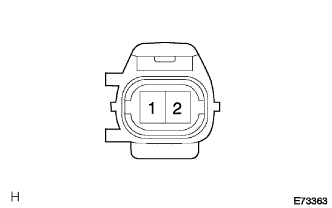

Thermista ASSY (Gaiki Sensor) Single Inspection |
| 1. Thermista ASSY inspection |
Outside air sensor resistance inspection
|  |
Use SST (Toyota Electrical Tester) to measure the resistance between the connector terminals of the thermista asser (outside air sensor).
 |
The sensor atmosphere temperature and resistance value at the time of inspection are measured and determined.
| Temperature (° C) | Standard value (kΩ) |
|---|---|
| 10 | 3.00-3.73 |
| 15 | 2.45-2.88 |
| 20 | 1.95-2.30 |
| twenty five | 1.60-1.80 |
| 30 | 1.28-1.47 |
| 35 | 1.00-1.22 |
| 40 | 0.80-1.00 |
| 45 | 0.65-0.85 |
| 50 | 0.50-0.70 |
| 55 | 0.44-0.60 |
| 60 | 0.36-0.50 |